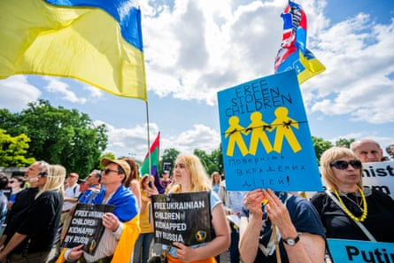

A s many as 35,000 Ukrainian children are still missing and thought to be held in Russia or Russian-occupied territories, according to an American team of experts, with families saying they are being forced to take desperate and risky measures to try to rescue them.
As Russian forces began their invasion in February 2022, children were abducted from care homes, from the battlefield after the death of their parents, or under coercion directly from their families.
Russia has rejected demands for the children to be returned, with an official accusing Ukraine of “staging a show on the topic of lost children” during ceasefire talks in Turkey this month.
Speaking to the Guardian, one mother has described her own dramatic rescue of her two teenage sons who were held in a camp in Russia for almost six months.
After Russian forces occupied Natalia’s home city of Kherson on the eastern border of Ukraine , in September 2022, a neighbour advised her to send her sons to a children’s camp in Anapa, a seaside resort town in Russia.
“The 21-day trip was free and they were meant to return to Kherson at the end. The boys wanted to go too, but it was a big mistake on my part to allow it,” she says.
In late 2022, Ukrainian forces liberated Natalia’s city, but her children were in a camp on the other side of the frontline and Russia would not let them return home.
“The camp authorities refused to let the children leave without my physical presence,” she says. “I didn’t know what to do.”
A march in London organised by the Ukraine Solidarity Campaign, demanding that Russia release abducted Ukrainian children.Photograph: Guy Bell/Alamy
Eventually, with the help of a Ukrainian organisation, Natalia obtained a passport and Ukrainian identification documents for her children. She then travelled alone across the border to the Russian town of Anapa on the northern coast of the Black Sea, passing through numerous border checkpoints where she had to explain to Russian soldiers why she was in the country.
She was travelling for six days, amid shelling, before finally being reunited with her children in February 2023. “You cannot even imagine my emotions, because my children are all I have,” she says.
So far just 1,366 children have been returned or escaped back to Ukraine, according to the Ukrainian organisation Bring Kids Back . A team of experts at Yale University has estimated that as many as 35,000 children may be held in Russia and its occupied territories.
It is feared that many have been taken by Russian forces and sent to military camps or foster care, or have even been adopted by Russian families.
Through extensive examination of Russian databases, official documents, family connections and even satellite images of Russian sites, official buildings and other sources, the Yale team has been able to establish the identities of thousands of children.
Nathaniel Raymond, executive director of Yale’s Humanitarian Research Lab, which has been investigating the abductions, says: “This is likely the largest child abduction in war since world war two – comparable to the Germanification of Polish children by the Nazis.”
Testimonies of recently rescued children reveal that they received military training at the camps and were punished for speaking Ukrainian. “We had to sing the Russian anthem and draw the tricolour,” says one rescued nine-year-old.
Children are also made to believe that their parents would face consequences if they did not comply, says Daria Kasyanova, chair of the Ukrainian Child Rights Network, which campaigns for the abducted children’s repatriation.
The forceful deportation and abduction of Ukrainian children is not new, activists and researchers say. Kasyanova says she witnessed similar abductions and deportations during Russia’s invasion of the Crimean peninsula in 2014.

Vladimir Putin with Maria Lvova-Belova, his children’s commissioner, in 2022. The ICC issued arrest warrants for them both.Photograph: AP
Back then, she worked to evacuate more than 40,000 people from Donetsk and Luhansk, including 12,000 children. “My daughter was 11 then, and some of her friends who stayed behind were sent to military camps in Russia,” she says.
Activists fear that many of the children will disappear into Russia’s adoption system, where laws were recently changed to allow Ukrainian children to be adopted and fostered by Russian nationals.
“Sometimes there are cases when one parent is on Ukrainian territory and the other one is in the occupation with the child. And if that parent dies or is arrested, then the child is left alone and at the risk of getting put into an orphanage. And if that happens, it’s basically impossible to get the child back. They will be lost,” says Kasyanova.
Raymond says this is why research into abductions is so important: “To document that these children have been forcibly deported.
“Taking a child from one ethnic or national group and making them part of another ethnic or national group – that’s a war crime,” he says.
The international criminal court agrees and in March 2023, issued arrest warrants against the Russian president, Vladimir Putin, and his commissioner for children’s rights, Maria Lvova-Belova , for the “war crime” of unlawful deportation of Ukrainian children.
The return of the children remains a key demand for Ukraine in any peace negotiations. Ksenia, an evacuation specialist at the Ukrainian charity Helping to Leave, says: “We are discussing territories – and our people, our children, are our territories. How can we give them up?
“These are our children, they are Ukrainian and they have to be brought [home]. Russia doesn’t have any right to them,” she says.
Raymond says the children are being used as a bargaining chip in negotiations. “When Russians started out, they thought they were going to be victorious quickly, so this programme was rolled out, not to take these kids and hold them, but to be able to Russify Ukraine.
“But because things started to go south quickly, they had to move their propaganda from the liability concealment phase to using these children as hostages to be leveraged in the negotiations,” he says.